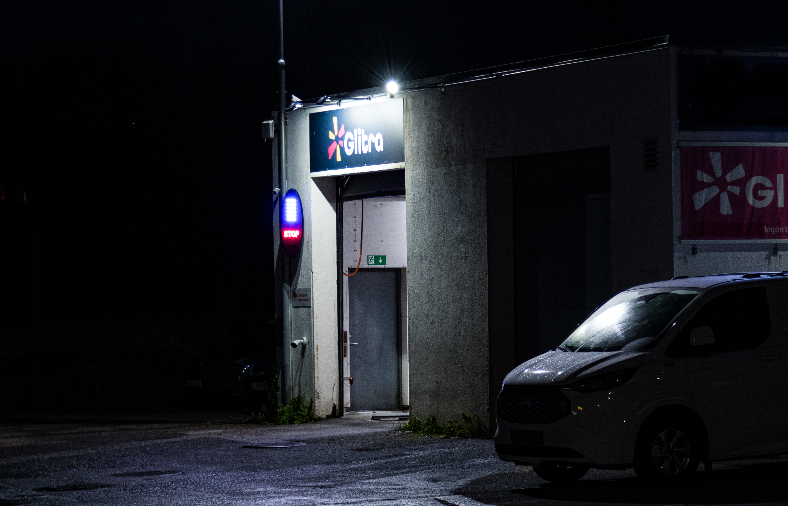
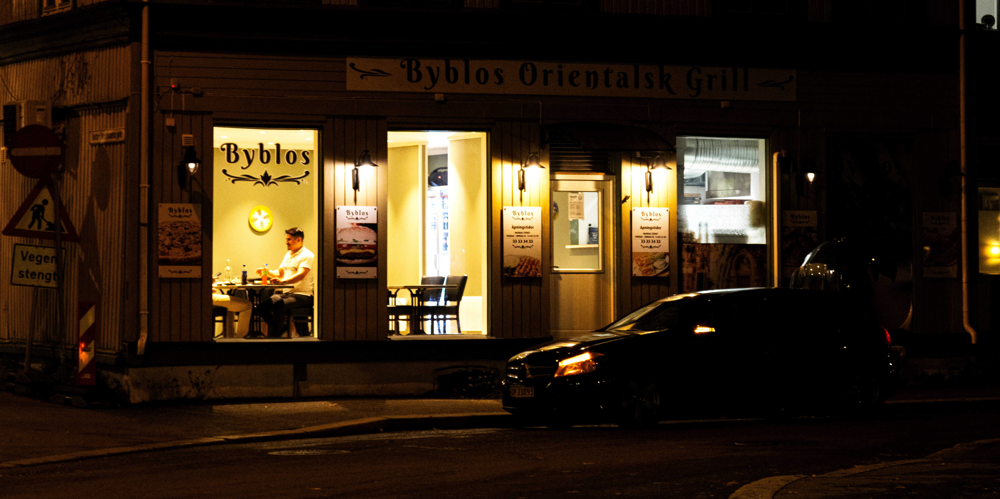
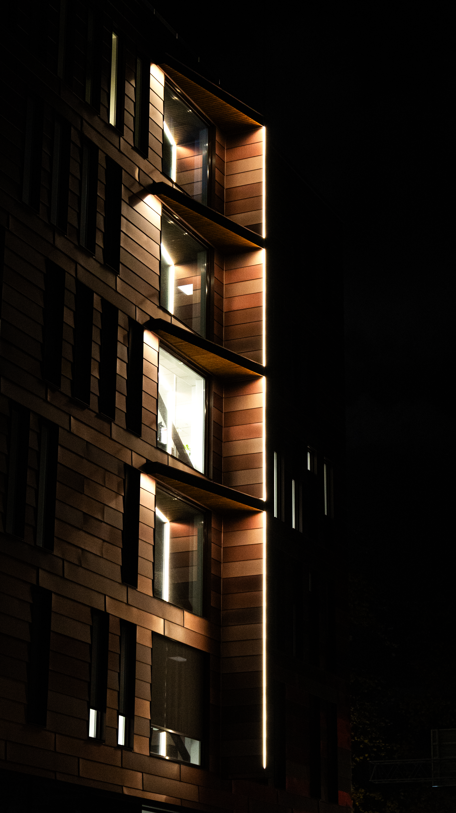
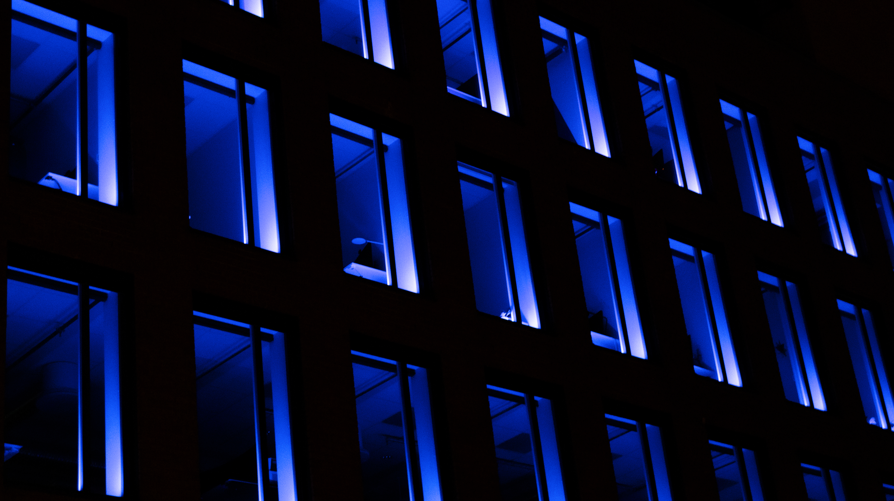
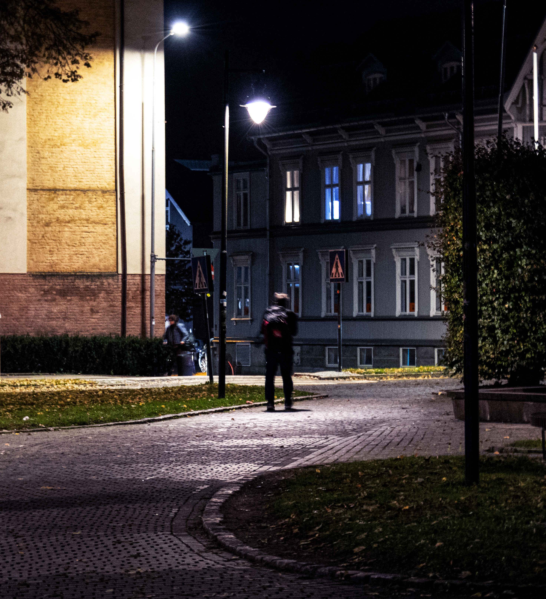
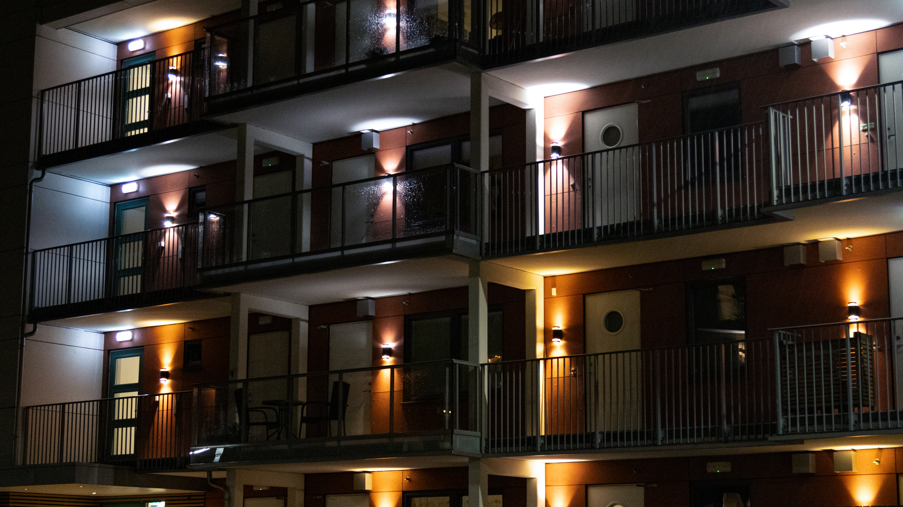
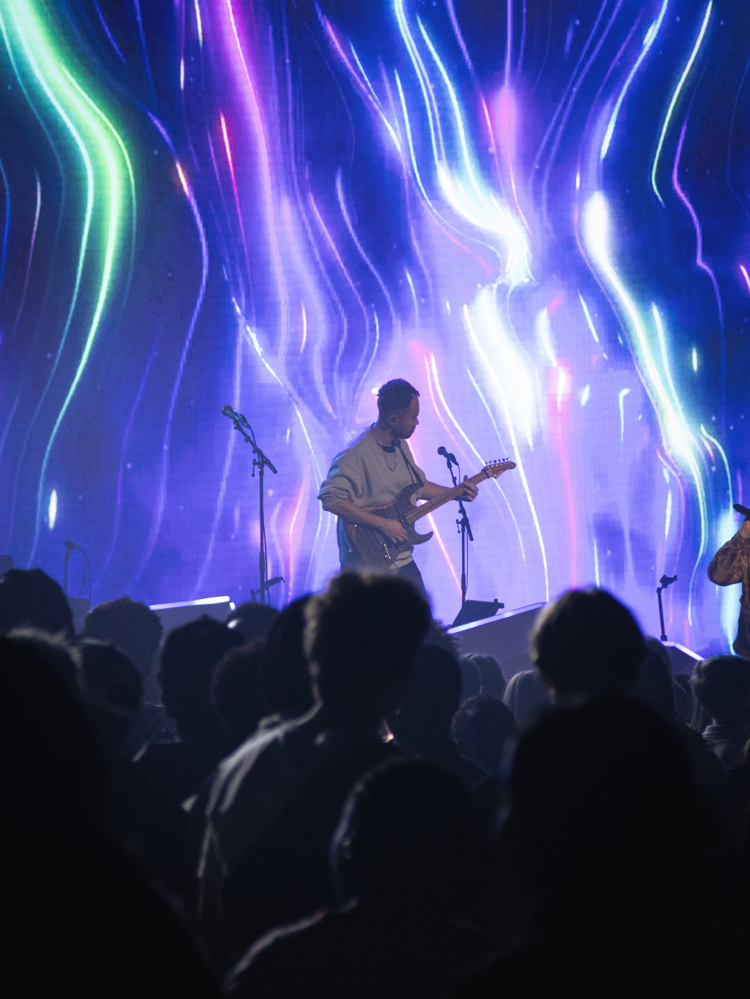
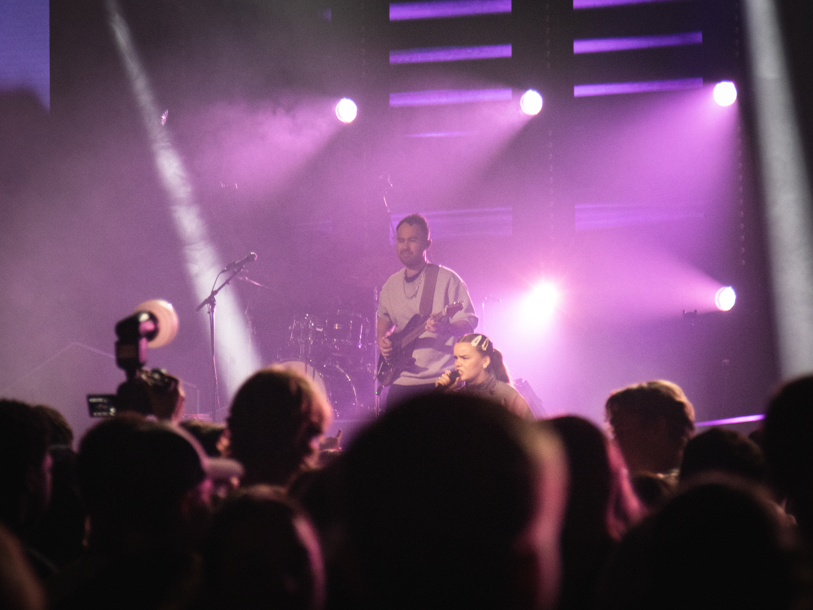
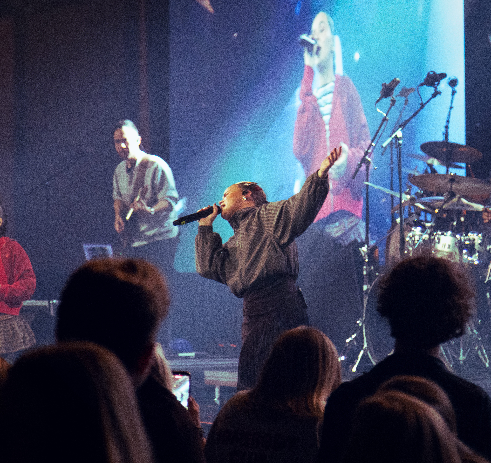
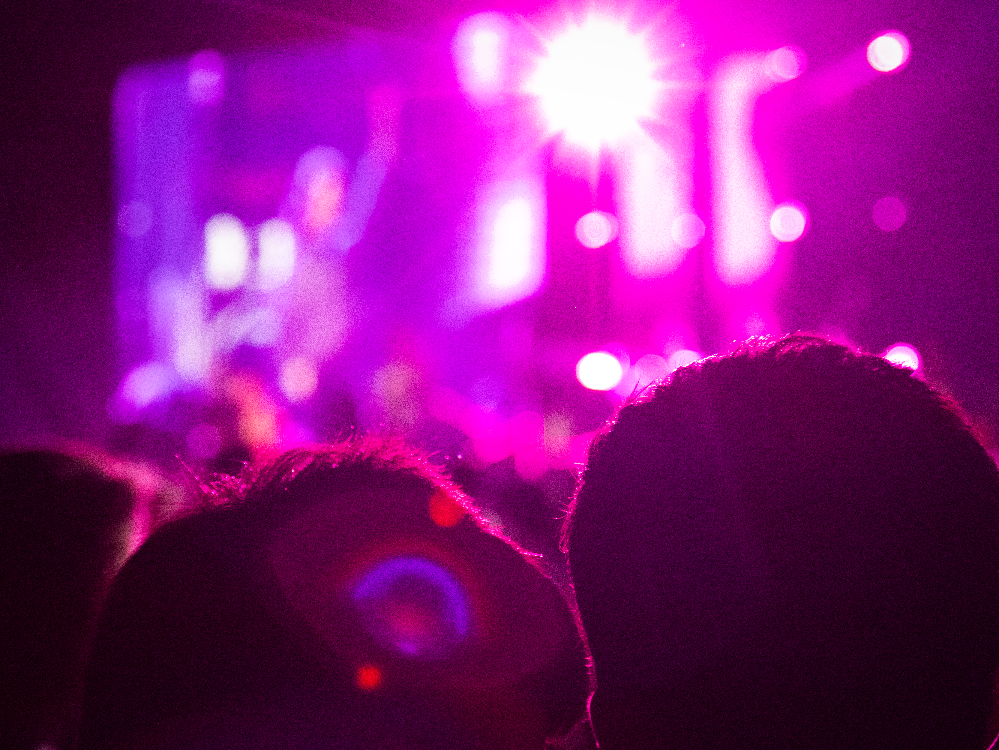
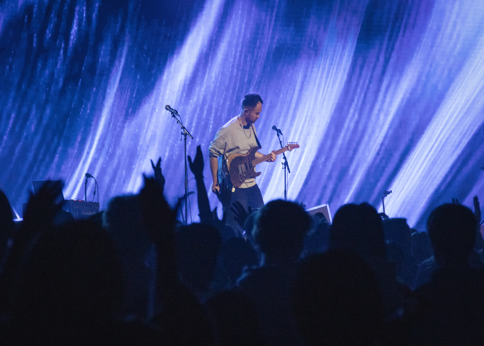
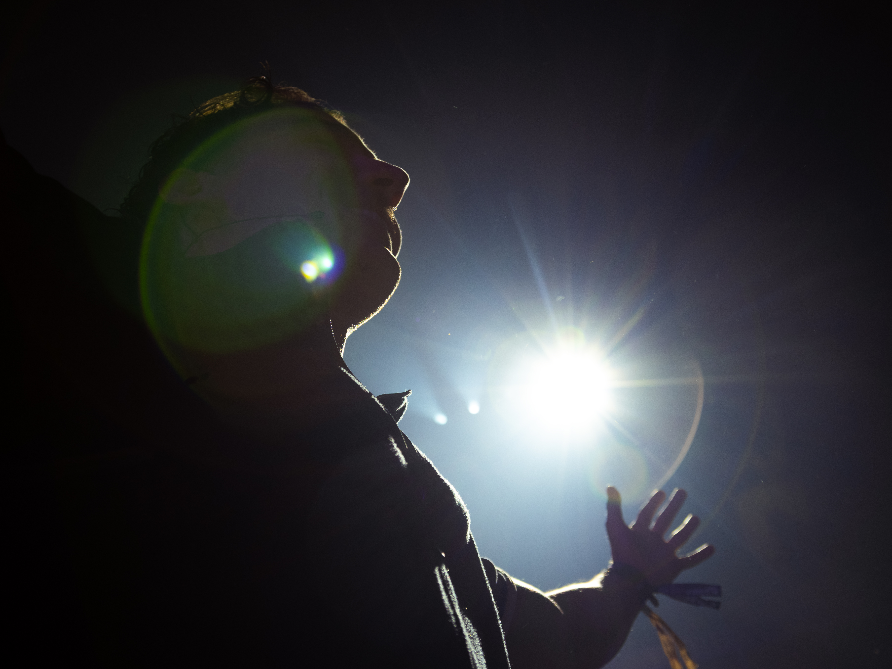
Youtube Kanal
Jeg har en Youtube kanal hvor jeg lager videoer om ulike spill. Desværre har jeg vært opptatt og har ikke kunnet legget ut noe på en stund. Men jeg planlegger å lage noe snart.
Fotografi
På grunn av skole, har jeg drevet med fotografi i en periode. Her er noen av bildene som jeg har tatt i denne perioden.
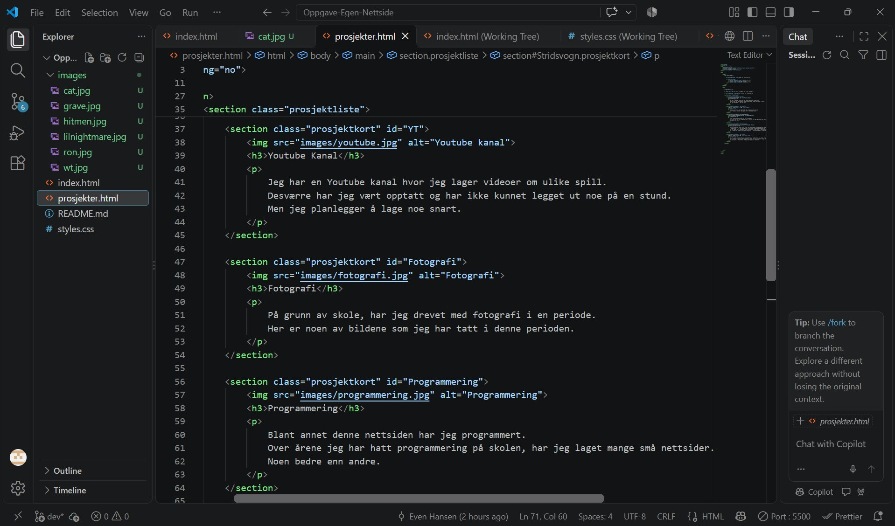
Programmering
Blant annet denne nettsiden har jeg programmert. Over årene jeg har hatt programmering på skolen, har jeg laget mange små nettsider. Noen bedre enn andre.
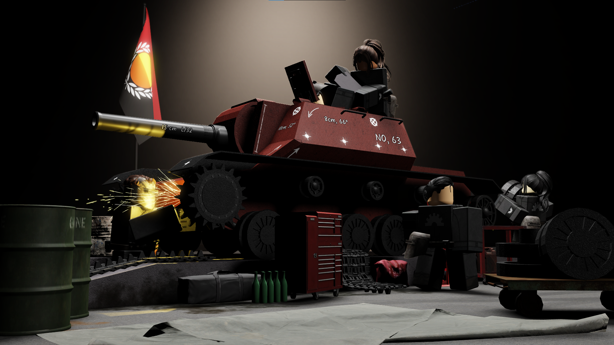
Stridsvogn Design
Hvis jeg ikke gikk linja IM, ville jeg sikkert endt opp med å designe maskineri. I sommerferien i år, tok jeg tiden til å forske på hvordan komponentene i en stridsvogn fungerer. Jeg har jobbet med å designe en fiktiv stridsvogn, og har prøvd å gjøre den så realistisk som overhode mulig. Den er enda ikke ferdig, men jeg har planer om å fortsette med den i fremtiden når jeg har tid.
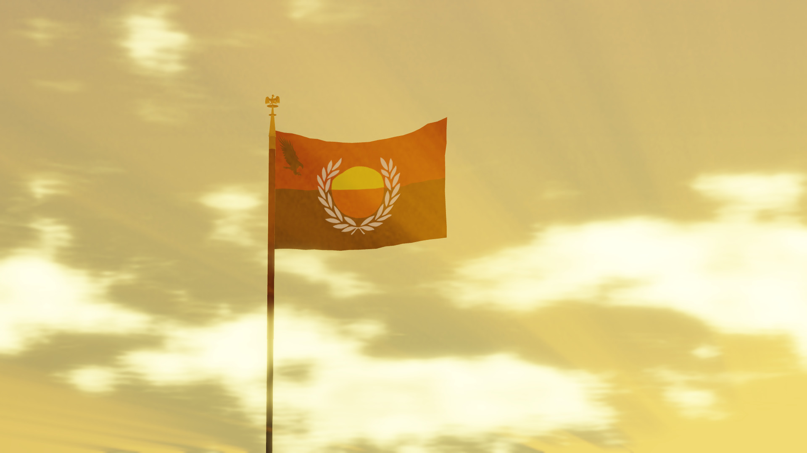
Fiktiv verden
Jeg har drevet på med å designe en verden basert rundt tidlig til midten av 1900-tallet. Blant annet har jeg laget en rekke fiktive land, alle med sine egne flagg, ideologier, og militær. Jeg planlegger å utvide denne verdenen og historien i framtiden.